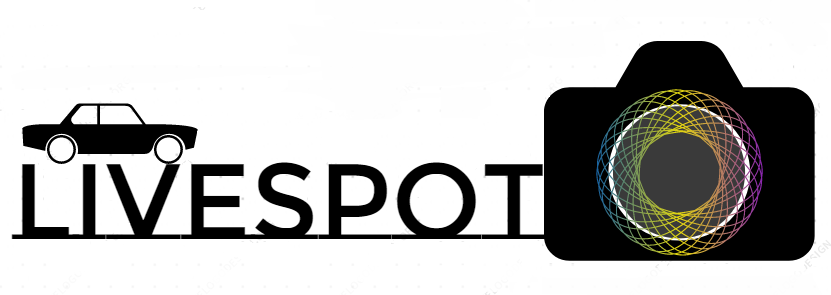

LiveSpot
Your Modern Parking Solution

Problem
The problem posed to the team by the parking division was the inability of faculty and staff to locate parking in a timely fashion. This is resulting in time being wasted to search for a parking spot as well as an excess of emissions. The problem occurs primarily during the workday hours 8:00 am – 5:00pm, these peak hours are when the team is seeking to enact the most change.Solution
To solve this problem the team is proposing to utilize a camera paired with a small computer located outdoors, and a second system to the “heavy lifting”. The outdoor setup will use an IP (internet-protocol) camera to acquire images of specific parking spots. The small, outdoor computer will oversee sending the images acquired by the camera to the second remote system and ensure that each camera remains operational by frequent ping checks. The remote system will then check for a car in each spot and update our mobile applications accordingly. Each user will get live updates pushed to their mobile devices to provide a real-time aspect to the service, and to keep each end user appraised of their parking options.Role
On this project, my title was Backend Lead My main role was to collect real-world data to train our Convolutional Neural Network. This consisted of going through archive data and selected images that give a good overall look of the parking lot through all seasons. I selected images when it was snowing, clear, night, day, rain, etc. This will ensure that we can make acurate prediction no matter the weather.In order to easily collect this data nad split it into a proper dataset, I created a tool that will pull the bounding boxes of spaces in the database, and overalys them over an image. From there, you can click on the boxes to determine whether there is a car in the spot or not. This images are then appropriately split, tagged, and added to the dataset.
Another tool I created allowed us to easily change or creating the bounding boxes for the lot. This comes in handy when the camera is bumped out of place or the application is going to support a new lot. The tool pulls the current bounding boxes for the lot in the database, if they already exists then they are overlayed and if they do not exists it show ther bare image. You can then edit bounding boxes by dragging the corners of the spots with your mouse, and once you click export to DB, the spots are updated in firebase.
Societal Impact
This system will get rid of the headache of having to drive in circles searching for an open spot. On campus, this will allow studnets and faculty to save time and help fans easily find parking during gamedays. Another major impact this will have is on revenue brought to cities, schools, or businesses that implement it. We keep tarck of heuristic data so anybody taht implements iut will know when to raise rates, which will ultimately bring more money to the business.Links
Click here to be directed to the project website.